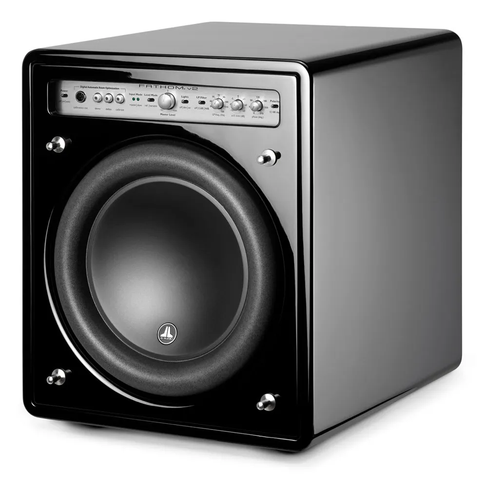

Subwoofer 10″
Fathom f110v2
Langhub-Chassis und ein sehr starker Schaltverstärker in einem kompakten, geschlossenen Gehäuse. Gleiche Technik wie im Flaggschiff Gotham.
- 1.100 W (kurzzeitig)
- 27–111 Hz (±1,5 dB), −3 dB bei 25 Hz
- D.A.R.O.-Raumeinmessung
- Cinch und XLR
Klavierlack Schwarz